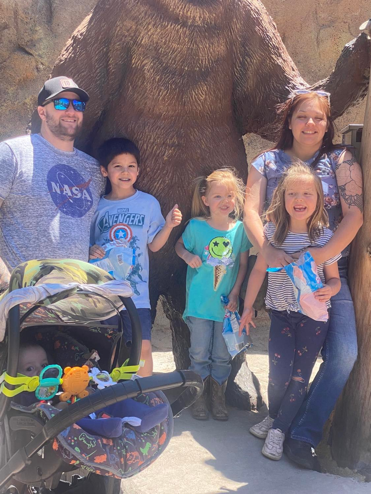

About Me
Hello, My name is Madison but you can call me Jon. I am a computer science sttudent at Full Sail University. I am father of 4 amazing children and husband to an amazing wife, a veteran, and a big hobbyist. Below you can read more about me.Veteran
I joined the United States Navy Reserves in 2015. I served 8 years and retired March of 2023. I rose to the rank of First Class Petty Officer (E6). While in the service I held the postions of squard leader, flight line team lead, assistant and lead petty officer of my unit. My time in the serice gave me the tools and experiance I need to meld with any team and complete any mission tasked to me.
Student
In 2020 I started a career as an aviation mechanic. After a few years I decided I wanted to do more than turn wrenches. In 2022 I enrolled at Full Sail University computer science program. In early 2023 I made the change to become a full time student. I am now prejected graduate with my bechelors degree in computer science in early Fall of 2024. I am exited for this next chapter and the challenges that come with it.

Family Man
I claim many titles but the best one i can claim is father and husband. My four kids keep me on my toes and my wife keeps me humble. My family is the most important thing in my life and the reason for my drive and dedication to everything I do. A major part of my decision to go back to school was to show my kids its never too late to start over and achive your goals.
Hobbyist
In my free time I love to work with my hands and work out my brain. My hobbies include building lego models, playing board games with my kids, running wild and crazy adventures with my friends in Dungeons & Dragons, and building puzzles with my wife. My current hobby projects include: building the Lego Rivendell set, running a dragon themed campaign in D&D with my close friends a 3 week long risk game with my kids every Thurday night, and completing a 4,500 piece jiggsaw puzzle of the Grand Canyon with my wife.
My Skills
Here is a list of my skills. Although it is small now I am striving to increase my skills and knowledge base everyday.My Portfolio

Game of Life
Language: C#
IDE: Visual Studios with Windows Forms
First major project built while in school. My take on John Conway's Cellular automation theroy.
Click here for GitHub Repository

Calculator App
Language: C++
IDE: Visual Studio with wxWidgets
First project utilizing the complex Shunting Yard algorithm to solve multistep equations in the correct order.
Click here for GitHub Repository
KnowledgeNinja App
Language: Java
IDE: Android Studio
First large group project done with fellow students. App is still under development.
Click here for GitHub Repository

Reservation Station
Language: C++
IDE: Visual Studios
Reservation system build using the Mutex function to lock out threads. Utilized a gas station to demostrat threads locking to have each car fill up with fuel.
Click here for GitHub Repository